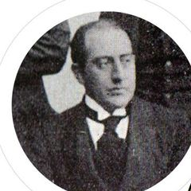

Antes de empezar
Conocé el cofre
Recorré la pieza: mirá la tapa desde un costado, rodeala y acercate a la placa. Estas fotos te ayudan a ubicar sus partes.
El cofre original está en el Museo Histórico UNL (9 de Julio 2154, Santa Fe). Recorrelo con estas fotos y tocá «Ampliar» para mirar los detalles: ahí están las respuestas.
- Tapa en forma de pirámide baja
- Placa de bronce con la dedicatoria
- Corona de laurel tallada
- Cornisa moldurada
- Cerradura
- Panel con guirnalda y corona oval
- Esquina con hojas de acanto
- Zócalo
- Faldón con una concha tallada
- Rodilla tallada
- Pata curva en S (cabriolé)
- Pie en voluta
1 · Mirar
Seis preguntas que responde el cofre
Cada respuesta está en la pieza que tenés enfrente.Cada respuesta está en las fotos del cofre. Por cada acierto ganás una llave y una parte de su historia.
2 · Abrir
¿Qué guardaba el cofre?
Te faltan 6 llaves para abrirlo.
Una bandera argentina
Las donantes la ofrendaron «inspiradas en el amor a la patria» a estudiantes que pedían una universidad nacional para el Litoral. Para ellas, apoyar esa universidad era servir a la patria. La bandera y el cofre se conservan en el Museo Histórico UNL.
La ilustración es una recreación; la bandera original se guarda en el museo.
3 · La historia que guarda
Siete años de lucha, 1912-1919
Alejandro Grüning Rosas (Rosario, 1890-1973) recibió el cofre como primer presidente del Centro Estudiantes de Derecho. Estuvo en cada paso de la lucha por la universidad. Seguí su recorrido con piezas del museo.
Abrí el cofre para leer la historia completa. Por ahora, estas son las fechas.

«Yo algo tengo en mi poder y lo conservo, como un tesoro (es mi única riqueza), con los recuerdos de las luchas inolvidables de Santa Fe».Alejandro Grüning Rosas, 1940. Su archivo es hoy una colección de este museo, como el cofre.
4 · Dejar
Dejá tu bandera
En 1914, catorce mujeres dejaron sus nombres en bronce para apoyar a los estudiantes. ¿Qué les dejarías hoy a quienes estudian en la UNL?